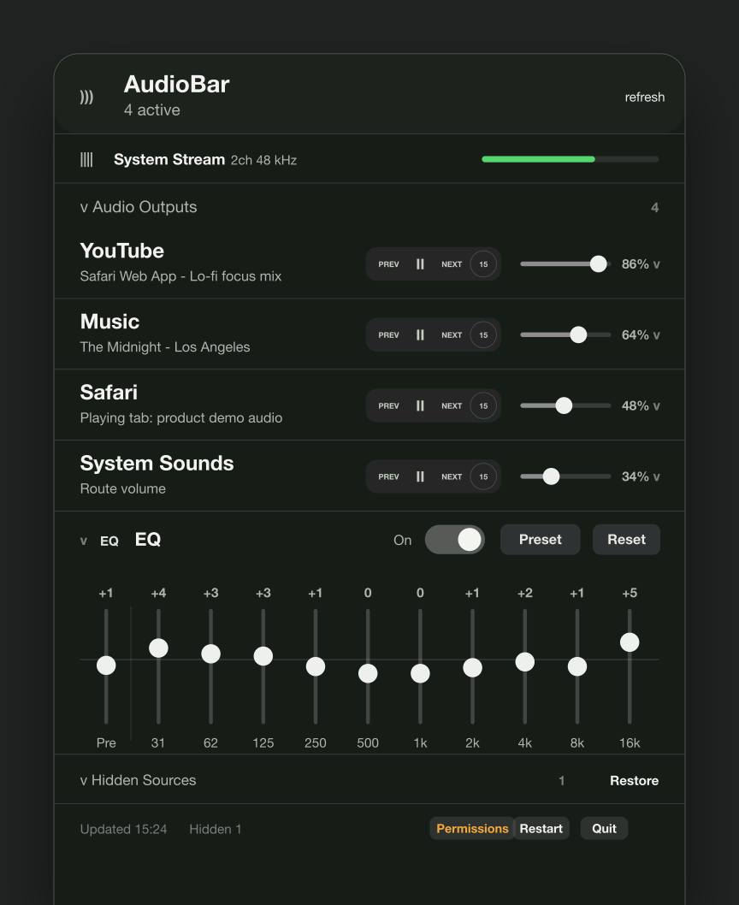

The channel mixer macOS forgot
AudioBar
Control the volume of different audio sources from your menu bar. AudioBar gives macOS the per-channel mixer it should already have, then adds a compact 10-band EQ for shaping the routed system sound.
Download for macOS
For macOS 14.2 or newer.
YouTubeChannel volume
MusicChannel volume
EQ Route10-band system tune
What It Does
- Adds a practical menu bar mixer for separate audio channels, so one loud app does not force you to change the whole Mac volume.
- Controls supported sources such as Music, Spotify, and Safari Web App media with direct channel volume sliders.
- Shows active CoreAudio output sources and lets you hide rows you do not want to manage.
- Applies a compact 10-band EQ to routed system audio on supported macOS versions.
- Lets you hide sources and restore them later from the left-click panel.
How It Looks

Install Notes
- Requires macOS 14.2 or newer.
- When the notarized zip is available, download it, unzip it, and move
AudioBar.appto/Applications. - macOS may ask for system audio capture, Automation, or Accessibility permission depending on which controls you use.